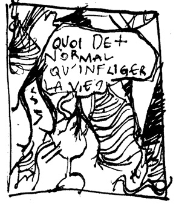
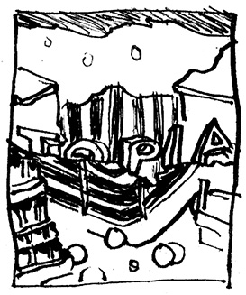
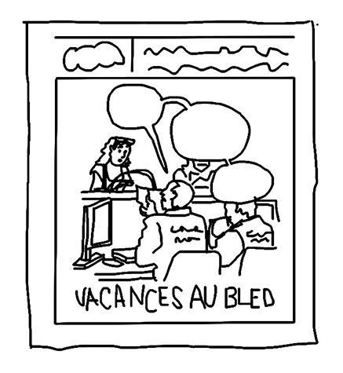
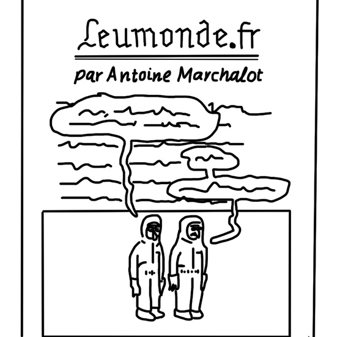

Elsa Abderhamani – sélection
Paris, France
Artiste et dessinatrice
Études d’art et de philosophie
Co-créatrice de la revue de bande-dessinée Bien, monsieur
Tara booth, Surnager au quotidien, éditions Arbitraire, 2018
Traduite de l’anglais. Une bande dessinée drôle, triste, étrange, angoissante. Qui étonne, et qui bouleverse les habitudes de lecture. Que ce soit pour la forme ou pour le fond. L’autrice parle de poils, de médicaments, de dépression… et on rit. C’est une courte bande dessinée, mais elle réussit à être touchante, tout correspond à un univers particulier et original : qui est celui de l’autrice. Les couleurs et les motifs sont flashy, grotesques et parfois dégoulinants, bref ça surprend de tout côté.
Oriane Lassus, Quoi de plus normal qu’infliger la vie ?, éditions Arbitraire, 2016
Que se passe-t-il pour une femme qui ne veut pas d’enfants ? Oriane Lassus aborde un sujet important en bande dessinée, ses dessins font bien passer le message. Son travail, de manière générale, est impressionnant pour sa clarté, son humour et son engagement.
Revue Topie, Samandal, Serendip Livres, 2017
Revue trilingue, avec exemplaires en français, anglais et arabe. C’est quoi ? Un collectif libanais qui invite à chaque numéro un.e directrice ou directeur de publication pour proposer un objet de qualité, avec des histoires variées, en anglais, français et arabe. C’est surtout ce dernier point qui m’intéresse particulièrement, et qui me semble essentiel pour évoquer la bande dessinée actuelle. Une bande dessinée ouverte, internationale… Bref, une vraie réflexion sur qui on est, où on se situe et comment ouvrir d’avantage le milieu très fermé de la bande dessinée française. Le collectif s’attache également à proposer un objet graphique de très grande qualité, que ce soit pour les choix des typographies, des couleurs et des procédés d’impression.
Yuichi Yokoyama,Travaux publics, éditions Matière, 2004
[Hors-sélection]
Je crois que ce n’est pas traduit même s’il s’agit d’un auteur japonais. Ça part dans tous les sens, c’est magnifique, maîtrisé. L’auteur évoque des sujets qui m’importent le partage de l’espace et la construction des paysages qui nous entourent. C’est assez intrigant et flippant. C’est aussi édité par Matière, une maison d’édition qui se renouvelle sans cesse, avec une attention particulière aux formats, aux papiers, aux impressions. Ce qui correspond nécessairement à la minutie et au travail de Yuichi Yokoyama.
Yasmine Bouagga, Lisa Mandel, Collection Sociorama, parution depuis 2016
Il s’agit d’une collection importante, avec certains numéros qui m’ont marqué plus que d’autres, comme celui sur les JT en banlieue, qui associe des sociologues à des dessinateurs et dessinatrices de bande dessinée. C’est pédagogique sans être lourd, et ça peut être drôle alors que le sujet ne l’est pas nécessairement. Ça me semble être exemplaire pour une collection assez grand public.
Revue Biscoto, collectif, parution depuis 2016
Revue de bandes dessinées pour enfants. La revue Biscoto est essentielle, car elle s’adresse à des enfants, les fait rire et réfléchir en les considérant, sans pour autant les prendre pour des grands. C’est un objet mensuel avec à chaque fois un thème particulier. De nombreuses rubriques évoquent et décortiquent le sujet abordé en couverture. On y retrouve aussi des artistes passionnant.e.s comme Benoît Preteseille.
Antoine Marchalot, leumonde.fr
Revue numérique. Au début on se dit que sur Le Monde, il ne peut y avoir décidément rien de bien. Et puis surprise, cette page hebdomadaire de bande dessinée faisait office d’infiltration géniale dans un univers un peu pourri. Les dessins sont drôles, politiques, et l’idée de l’auteur est de s’emparer d’un article publié sur le site du Monde pour venir ajouter sa petite touche personnelle… en dessinant directement dessus. S’il ne devait y avoir plus qu’une rubrique sur internet, je choisirai Leumonde.